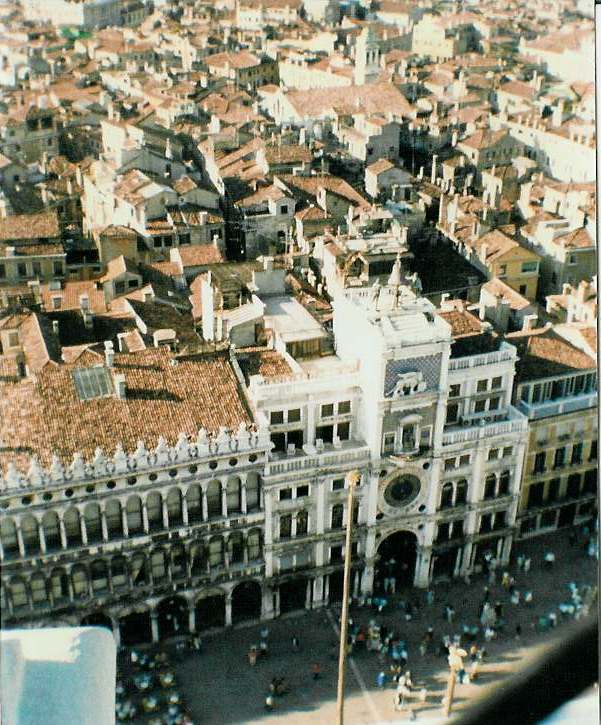

Inter Rail 1986 Day 19
Wednesday 10th September 1986
Having paid Mrs Woman last night we left quickly in the morning and caught a bus down to the railway station. We
were early for the train therefore took the opportunity to ask for extra pages for our Inter Rail tickets.When we got them they turned out to
be bigger than the original book and in Italian.

The train to Florence was a faster express train and quite full when it pulled in with people coming from Pisa airport. We were in plenty of
time to catch the straight through train to Venice. We shared our compartment with 3 Japanese girls. Went for a coffee into the restaurant car.
It was brilliant as it has swivel seats and large double glazed picture windows. Unluckily we picked a tunnelly bit to sit in it so there
wasn't much to see at times but there were 3 Yanks talking crap to listen to.
Jon went back to the compartment but Eli and I stayed for a second cup of cappachino. We were sat drinking coffee when we reached Bologna
where hordes of people got on the train. When we got back to the compartment a woman had nicked a seat so Eli and I had to share an armrest
for most of the rest of the journey. The husband of the woman and kid did apologise and say thank you in English so we didn't feel so bad.
Our carriage got invaded at Mestre (the last mainland station) as people wanting to go to St. Lucia in central Venice had to change
compartments. We left our luggage in the station left luggage and headed off to catch a No.1 vaporetti or water bus to take the trip down the
Grand Canal under thr Rialto Bridge to St. Marks Square. After a quick look at the Bridge of Sighs we bought corn and spent a while having
photos taken with the pigeons.
The Basilica was crowded and not very religious as you had to pay to see most of the most interesting things. Wandered outside and around the
side streets, changed some money, had a meal (tried for a lasagne but the kitchen was shut so we had to have another sodding pizza). Went up
the Campanile. It was a bit crowded but the views were lovely with the sun shining. Two small "orchestras" were playing in the square.
Headed for the Rialto bridge and wandered arond the shops. All three of us bought Italia Venezia T Shirts which immediately became the trip
T-shirts. Walked back to station through the lovely side steets, stopping off to look at a free Chinese items exhibition. Changed into our
t-shirts. Eli and I sat on the station steps drinking wine whilst Jon phoned home. Loads of gondolas drifted past with Italian tenors
seranading those on board along with squeeze box players. A gorgeous way to spend an evening.
When it got a bit draughty we went inside and sat in the station playing Hearts until out train arrived. Got a compartment to ourselves in
which the seats pulled down to make a bed. Went off to sleep not long after the train moved off at 0.50am.
{kind=link}
{kind=link}